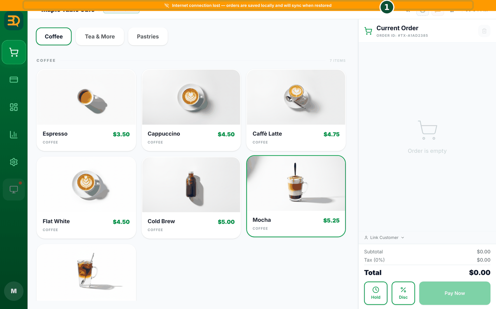

11오프라인으로 쓰기
항상 인터넷이 필요한 것은 아닙니다. 인터넷이 끊겨도 BrewDesk는 계속 작동하고 모든 내용을 저장합니다. 인터넷이 돌아오면 자동으로 따라잡습니다. 사장님이 할 일은 없습니다.

- 인터넷이 끊기면 평소처럼 주문을 받습니다.
- 주문이 기기에 바로 저장되므로 아무것도 잃지 않습니다.
- 오프라인에서도 영수증을 인쇄할 수 있습니다.
- 인터넷이 돌아오면 모든 내용이 자동으로 올라갑니다. (주문을 클라우드에 복사하고 정리한다는 뜻입니다.) 두 번 전송되지 않습니다.
이 점을 자랑해 보시기 바랍니다
언제나 영업 중. 신호가 약하거나 끊겨도 단 한 건의 판매도 멈추지 않습니다. 다른 계산대는 인터넷이 켜져야만 작동하지만, BrewDesk는 그런 문제가 없습니다.
오프라인 로그인
오프라인일 때 로그인하면? 인터넷이 끊긴 상태에서는 이 기기에서 한 번이라도 로그인한 적 있는 계정만 들어갈 수 있습니다. 처음 보는 계정이면 "You're offline. Only an account that has signed in on this device before can be used offline."(오프라인 상태예요. 이 기기에서 한 번이라도 로그인한 계정만 오프라인에서 쓸 수 있어요.)라고 안내합니다.
오프라인 기기 연결
인터넷 없이도 기기를 연결할 수 있습니다. 설치한 BrewDesk 앱에서 오프라인으로 로그인 화면을 열면 "인터넷에 연결할 수 없어 매장의 메인포스를 찾고 있어요"라는 안내와 함께 잠시 뒤 자동으로 메인 계산대 찾기 화면으로 넘어갑니다. 매장 Wi-Fi만 살아 있으면 인터넷 없이도 새 태블릿을 연결할 수 있습니다 (새 기기를 메인 계산대에 붙이기 참고).
추가 기기도 매장 Wi-Fi로 계속 작동합니다. 인터넷이 끊겨도 태블릿과 추가 계산대가 멈추지 않습니다 — 매장 안 네트워크로 메인 계산대와 통신하기 때문입니다. Staff Ordering 태블릿은 여전히 주문을 전송하고, 테이블 착석·이동·합치기도 가능하며, 대기열도 계속 작동합니다. 메인 계산대가 켜져 있고 모두 같은 Wi-Fi에 있기만 하면 됩니다. (태블릿이 메인 계산대에 연결되지 않을 때 표시되는 화면은 Staff Ordering의 "주방에 전달되지 않았습니다"를 참고해 주세요.)
인터넷이 필요한 기능
인터넷이 꼭 필요한 것 3가지. 이 기능들만 연결될 때까지 기다려야 합니다 — 문자 보내기(대기열 Notify 호출 문자, 예약 확인 문자), 새 예약 만들기·수정(매장 밖에서도 같은 달력에 기록하므로 이중 예약을 막기 위함입니다), 그리고 카드 결제. 나머지는 그대로 작동합니다.
목록이 텅 비지 않습니다. 화면이 자료를 받아오지 못하면 빈 화면 대신 마지막으로 받은 내용을 보여 줍니다 — 위쪽에 "마지막으로 받은 목록입니다"(Showing the last list received)라고 표시됩니다. 연결되면 자동으로 새로 받아옵니다.